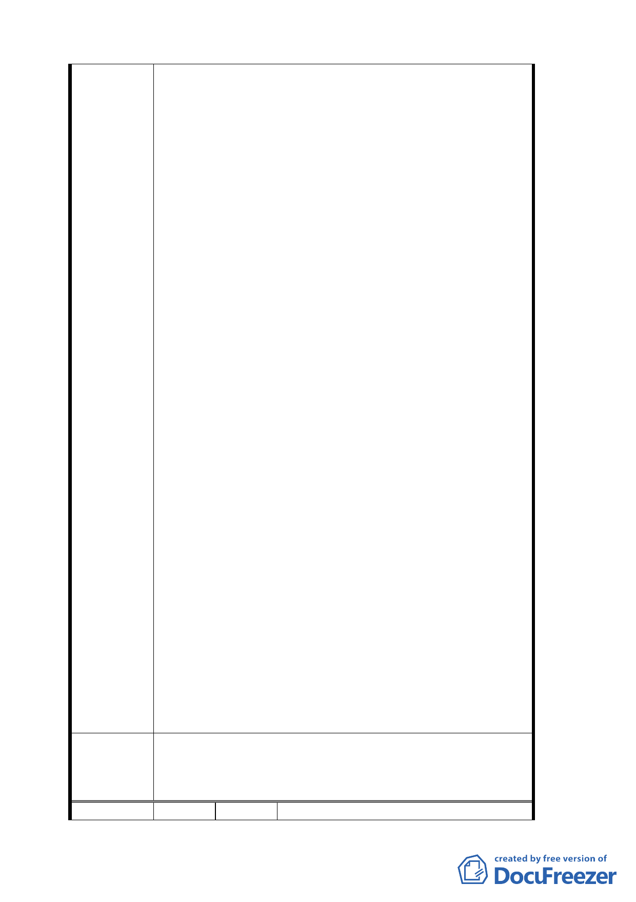

三、 請政府將原地主、一般私地主及四鄰居民納入協商對象。
1. 土地分配與公益回饋，應求得各方能接受之最大公約數。
2. 政府應採法律賦予之制度，以公權力協商仲裁之角色，推
動公共建設，不應委諸民法私權協議，獨厚國民黨享用都
市計畫利益。
3. 民國 81 年尚有以「機關用地」徵收，登記所有權人「中華
民國」管理機關「財政部國有財產局」，華興段 1 小段 445、
447、448、461 地號等土地，如此不法徵收圖利國民黨，
已延續半世紀。政府不應推諉權責，任由民眾與國民黨私
了。又上述零星土地，以及木柵路、光輝路角之一處袋地，
被國民黨土地包圍，如予棄之不顧，將來使用必至茲生糾
葛，均非地方之福。
-------------
94.5.31 補充
一、 請政府檢討確定本計畫之目的。
1. 如僅為永建國小遷建需要，建議以學校需用範圍辦理變更，並
依法徵收，其餘保留將來另行檢討研議。至於校地區位，基於
交通條件及教育與環境資源運用之配合，建議以中興山莊南側
「機關用地」變更為「小學用地」，以兼顧私立中山小學需用
活動空間。
2. 如為當地都市發展需要，建議一併檢討「行政區」、「機關用地」
之存廢及毗鄰地區之土地合理使用，綜合考量規劃辦理都市更
新，並採區段徵收方式整體開發。
二、 請規劃檢討辦理都市更新範圍。
1. 原「行政區」、「機關用地」全部納入，包括「台灣電力公司」
所有及「財政部國有財產局」徵收之「機關用地」，以及零星
散佈其間之ㄧ般公有或私有土地。
2. 下崙路與光輝路交叉路口之狹長街廓，畸零不整之公園與住宅
區交錯之土地。
3. 原永建國小校地。
三、 土地分配與公益回饋，應求得各方能接受之最大公約數。
1. ㄧ般公地機關及私地地主。
2.「國民黨」及原地主。
3.「財政部國有財產局」徵收之私地地主。
4.「台灣電力公司」及「私立中山小學」。
5.「台北市府政府」及「永建國小」。
四、 應採法律賦予之制度，於主要計畫明訂實施區段徵收。
1. 本案為主要計畫變更，涉及人民土地權益，須明訂於主要計畫。
2. 政府權責應調查或協調、協商及規劃事項，應於主要計畫處
理，俾供細部計畫遵循。
1. 本案有關土地權屬疑義之處理已超越本會審議權責，如有涉及
委員會決議
過去歷史背景因素而影響相關當事人之權益，應另循法律途徑
解決。
2. 餘依市府補充資料及簡報資料等修正內容通過。
編號 4
陳情人 臺北市私立中山國民小學
25